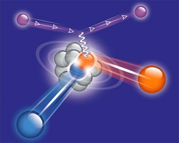

Short-Range Correlations

Most nucleons in a nucleus move independently in the average field of their neighbours. Now and then two of them come close enough to overlap and form a short-range correlated pair, with a relative momentum above the Fermi momentum, kF ≈ 250 MeV/c, and a small centre-of-mass momentum.
We break such pairs apart and detect both nucleons. The mix of pn, pp and nn pairs, and how it changes with momentum, maps the nucleon–nucleon interaction at short distance. Neutron–proton pairs dominate around 400 MeV/c, where the tensor force rules (PRL 113, 022501). Towards 800 MeV/c that dominance fades and the ratio of proton–proton to neutron–proton pairs rises, as expected when the tensor force gives way to an isospin-independent repulsive core (PLB 820, 136523).
We also ask which nucleons pair up in the first place. Recent data point to nuclear shell structure (Nature 654, 619; arXiv:2606.07754), and we model pair abundances with shell-model wave functions (PRC 114, 034002).